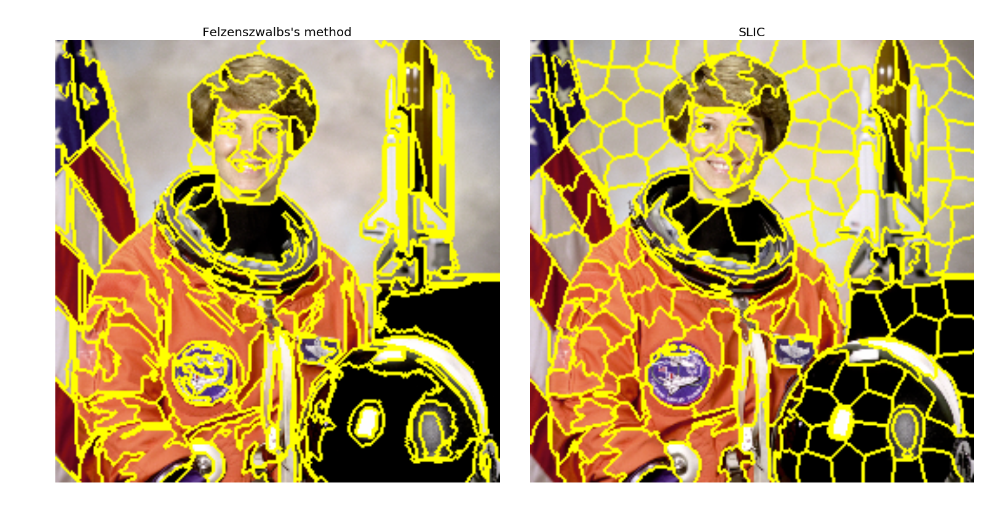
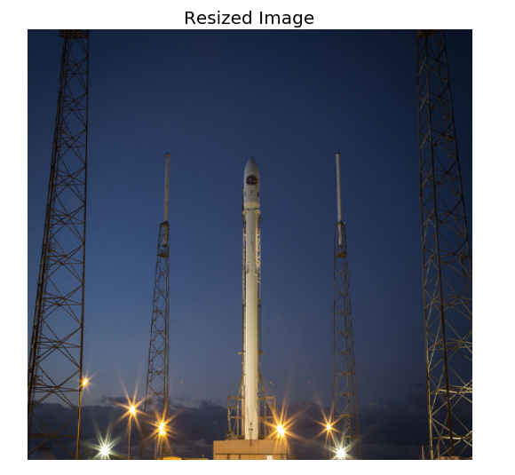
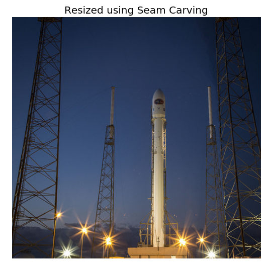
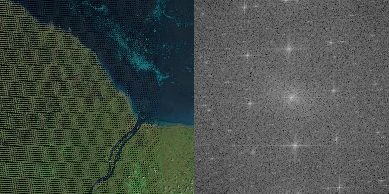
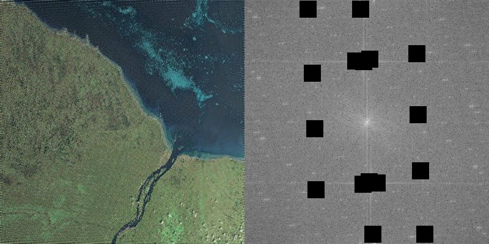
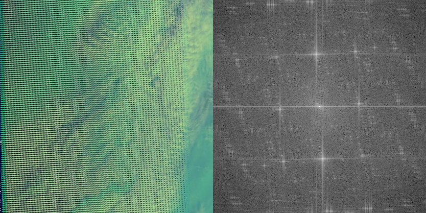
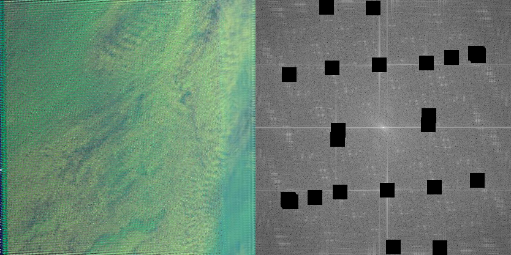
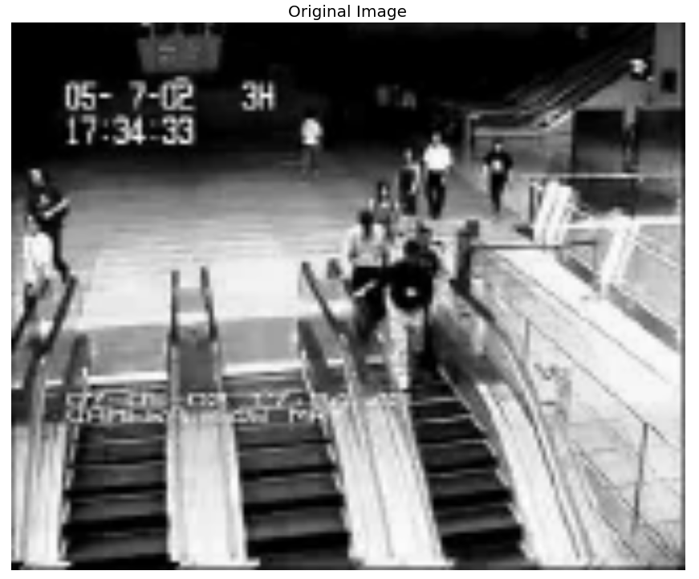
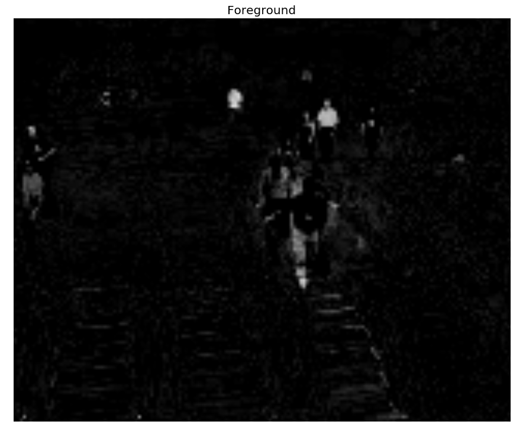
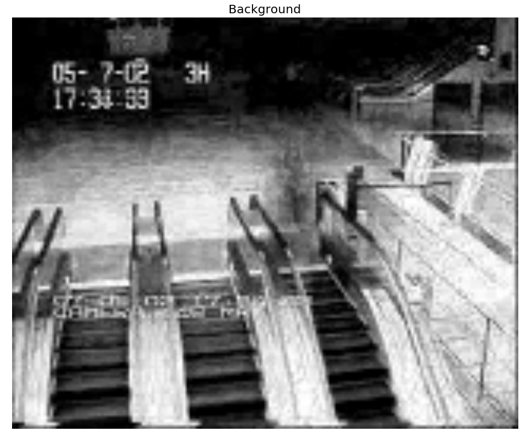

Things I have learnt about vision and learning
- by Vighnesh Birodkar
Marvin Minsky, Co-founder of MIT's AI Lab
In the 60s, Marvin Minsky assigned a couple of undergrads to spend the summer programming a computer to use a camera to identify objects in a scene. He figured they'd have the problem solved by the end of the summer. Half a century later, we're still working on it. [https://www.xkcd.com/1425/]
About Me
- 2nd year Master's student at NYU Courant studying Computer Science
- Have always been interested in programming robots.
- Open source contributor for scikit-image and scikit-learn .
- Currently Research Assistant with Prof. Davi Geiger at Courant.
Blog : https://vcansimplify.wordpress.com/
Website: http://vighneshbirodkar.github.io/
It all started with simple bots
[NITK 2011]
[NITK 2012]
- Debugging robots can be tricky and fun.
- If the visual environment is well-defined, it can be exploited to write simple and efficient image-processing code.
Region Adjacency Graphs (RAGs)
For scikit-image
Over-segmentation

[Example and code from blog]
img = data.coffee()
labels1 = segmentation.slic(img, compactness=30, n_segments=400)
# Build graph
g = graph.rag_mean_color(img, labels1, mode='similarity')
# Process it
labels2 = graph.cut_normalized(labels1, g)
- Peer-review vastly improved code quality.
- Specially for open-source projects, presentation of your work matters a lot.
- APIs should be easy to use and extensible. The graph API now supports 3 different graph types and 4 different segmentation algorithms.
Other Contributions
Seam Carving

Seam Carving
Seam Carving
http://fredo-editor.github.io/
Fourier Transform in 1D
Video from Wikipedia
Fourier Transform in images
Example 1
Example 1 - Corrected
Example 2
Example 2 - Corrected
In Action
- Helped me gain a better understanding of Fourier domain analysis. It is often talked about in academia but I never had hands on experience with it.
- Publishing your own code makes you think about things you had never thought of before.
- Good architecture choices early on can save hours of work later in development.
Contributions to scikit-learn
as Junior Data Scientist at NYU
Robust PCA
$$ \text{minimize}~~~ \Vert L \Vert_* + \lambda \Vert S \Vert_1\\ \text{subject to}~~~ M = L + S $$RPCA - Background subtraction
RPCA - Background subtraction
RPCA - Background subtraction
scikit-learn extension template
http://contrib.scikit-learn.org/project-template/
- A template for writing scikit-learn compatible extensions.
- Already used by 7 other projects.
- Stating a task in terms of a convex objective has surprising benefits.
- The larger the project, the more crucial is backward compatibility.
Summer internship
- DeepMagic, NYC based early stage startup.
- Trained ConvNets for image classification.
- Responsible for augmenting images and creating dataset.
- Deployed the service as a WebAPI.
- ConvNets are extremely sensitive to quirks in training data.
- Transfer learning improves accuracy on small datasets and saves lot of training time.
- Any invariance (scale, rotation, illumination) you expect the network to learn, should be present in the training data.
Research Assistantship
- Encode and Decode unlabelled videos frames.
- Make the encodings linear through time.
Strategies
- Adversarial Loss
- Explicit penalty
No penalty
Cosine distance penalty

No penalty

Cosine distance penalty

No penalty